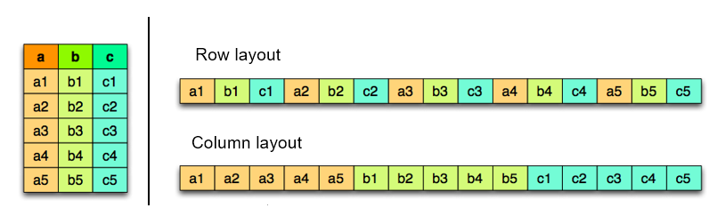
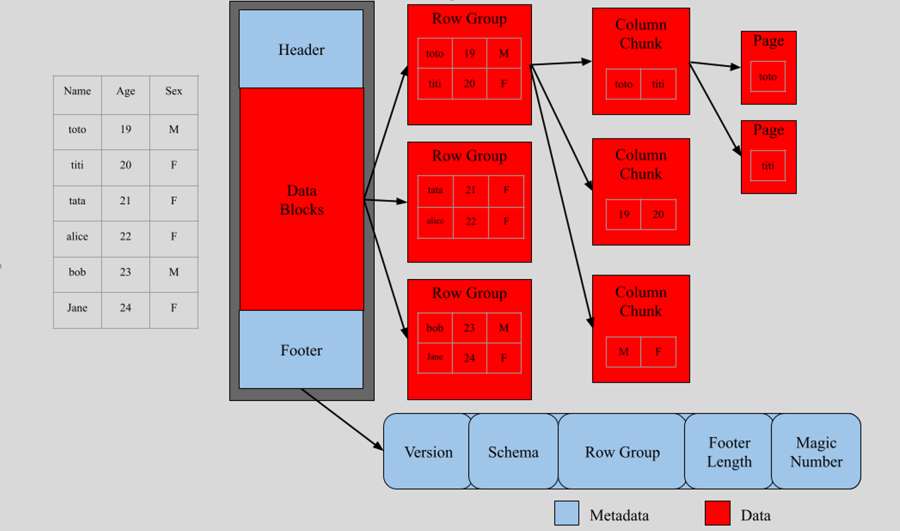
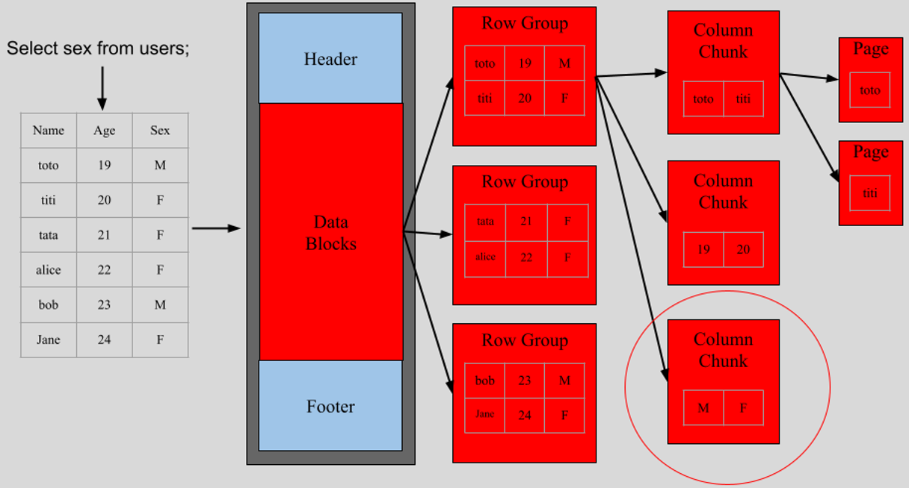
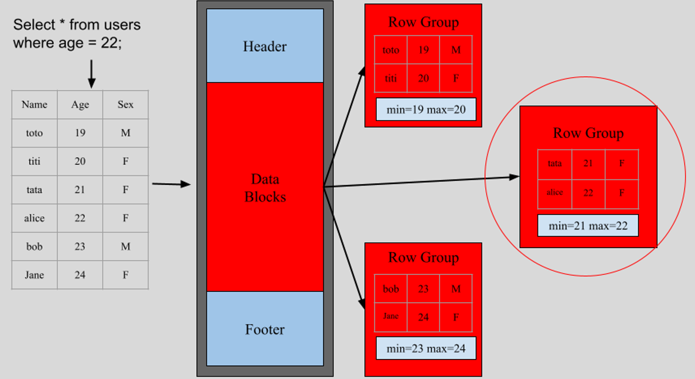
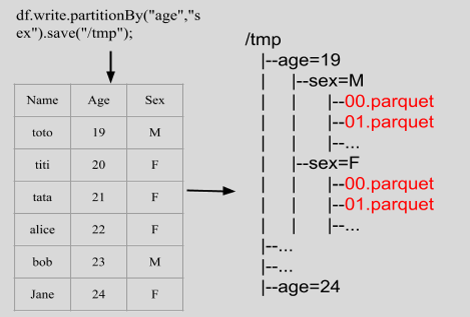
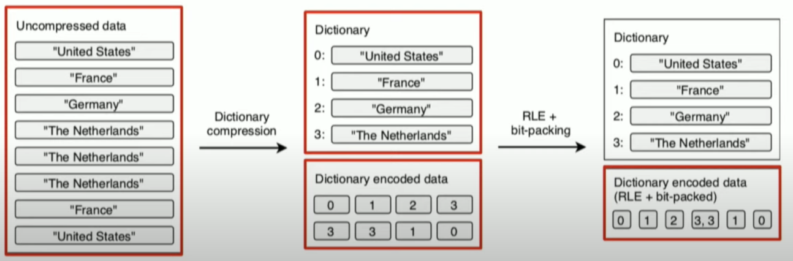
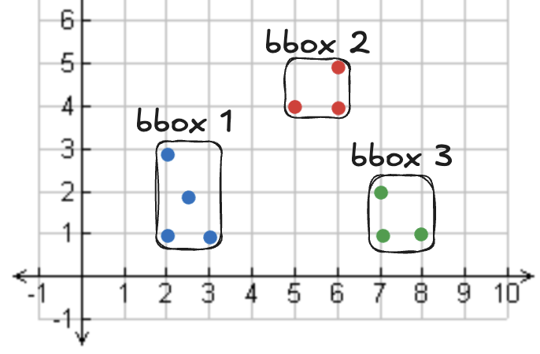

Parquet et GeoParquet
Equipe Datascience
Objectifs
- Qu'est-ce que Parquet?
- Comment lire/écrire un fichier Parquet ?
- Qu'est-ce que GeoParquet ?
- Comment lire/écrire un fichier GeoParquet ?
Qu'est-ce que Parquet ?
Apache Parquet est un format de de stockage orienté colonnes largement utilisé dans l'analyse de données Big Data (par exemple Spark, Flink, Hive, Dask, DuckDB, etc.).
Apache Parquet a été lancé par Cloudera et Twitter en 2012, il est depuis 2015 un des projets les plus populaires de la fondation Apache. Deux versions principales (v1 et v2) ont été publiées à ce jour.
Les avantages de Parquet
- Efficacité de l'espace de stockage : 5-10 fois moins volumineux que pour les formats CSV, json.
- Efficacité des requêtes (pour l'analytique) : 5-10 fois plus rapides que pour les formats CSV, json.
- Modification efficace du schéma de donnnées : Permet l'ajout de nouvelles colonnes sans réécrire tout le dataset.
- Pris en charge par les principaux outils : Spark, Flink, Pandas, Dask, DuckDB, etc.
Quelques désavantages de Parquet.
- Pas idéal pour les petits jeux de données : Les métadonnées et l'encodage risquent de prendre plus de place que les données elles-mêmes
- Format binaire : Le format de stockage n'est pas directement déchiffrable, il nécessite des outils pour la lecture et le débogage
- Coût d'écriture élevé : Ecrire un fichier parquet demande davantage de CPU que pour un CSV, json (notamment : tri, encodage, compression)
- Coût d'insertion élevé : Modifier ou insérer une nouvelle ligne peut nécessiter de ré-écrire l'ensemble du jeu de données.
Les concepts clefs de Parquet
- Stockage orienté colonnes : Parquet organise les données par colonnnes plutôt que par ligne.
- Projection push-down, predicate push-down : Parquet fournit un indexe au niveau des colonnes pour réduire les opérations I/O.
- Partitions : Parquet divise les données en partitions pour en optimiser la lecture et les traitements.
- Schéma et métadonnées intégrées : Un fichier Parquet contient le schéma complet des données et des métadonnées personnalisables.
- Encodage et compression : Parquet fournit un encodage et une compression au niveau colonnes
Stockage orienté colonnes vs orienté lignes
- Orienté colonne (Parquet, ORC) : Paradigme "Read Once Rea Many" (WORM) : nécessite moins d'espace de stockage et de temps de calcul.
- Orienté ligne (CSV, SAS7BDAT) : Faible coût pour l'insertion de nouvelles lignes

Structure de fichier Parquet

Projection pushdown
Le "projection pushdown" est une optimisation permettant au moteur de requête de ne lire que les colonnes qui sont effectivement ciblées par la requête, plutôt que l'ensemble des colonnes du fichier.

Predicate pushdown
Le "predicate pushdown" est une optimisation consistant à appliquer les filtres sur les données au moment de la lecture du fichier parquet, évitant de charger l'ensemble des données en mémoire.

Partitionnement
Le partitionnement est une technique de structuration des donnnées consistant à diviser un jeu de données volumineux en plusieurs sous-fichiers parquet en fonction des valeurs prises par une ou plusieurs colonnnes. Ces sous-fichiers parquet sont organisés en autant de dossiers que de partitions.

Encodage
L'encodage est une technique qui consiste à représenter les valeurs d'une colonne de manière plus compacte pour réduire le coût de stockage et pour réduire le coût de lecture. Parquet prend en charge plusieurs méthodes : Dictionary Encoding, Run-Length Encoding (RLE), Bit-Packing (BIT_PACKED), Delta Encoding, etc.

Compression
La compression, en Parquet, est appliquée sur les pages de données (après l'encodage) pour réduire encore davantage le coût de stockage et accélérer les opérations I/O. Chaque bloc d'une colonne d'un fichier Parquet peut utiliser une méthode de compression différente, indépendamment des autres.
- Snappy (par defaut) : Compression rapide, ratio de compression intermédiaire.
- Gzip : Compression plus lente, ratio de compression plus elevé que Snappy.
- Zstd (Zstandard) : Compression beaucoup plus rapide que Gzip, ratio de compression plus élevé que Snappy.
- LZ4 : Compression très rapide, taux de compression plus faible que Zstd or Gzip.
- Brotli : Compression plus lente que Snappy/LZ4, taux de compression très élevé (meilleur que Gzip dans la plupart des cas).
Qu'est-ce que GeoParquet ?
GeoParquet est une extension de Apache Parquet destinée au stockage de données géospatiales vectorielles (points, lignes, polygones) dans un format orienté colonnes, compressé et incluant de nombreuses métadonnées.
Il est déjà supporté par de nombreux outils (par exemple Sedona, GeoPandas, QGIS, DuckDB, Kepler GL, etc). Vous pouvez consulter le site officiel de GeoParquet pour plus d'informations.
Les avantages de GeoParquet (1)
- Efficacité du stockage : Le stockage orienté colonnes permet un encodage et une compression plus efficaces.
- Efficacité des requêtes analytiques : Implémente le "predicate pushdown"
- Passage à l'échelle : Le partitionnement facilite les opérations de calcul distribué
- Inter-opérabilité : Sedona, GeoPandas, QGIS, DuckDB, entrepôts de données cloud (BigQuery, Snowflake, AWS Athena)
Les avantages de GeoParquet (2)
- Métadonnées personnalisables : CRS, bounding box, geometry type.
Les désavantages de GeoParquet
- Format binaire : Le format de stockage n'est pas directement déchiffrable, il nécessite des outils pour la lecture et le débogage
- Pas (encore) aussi populaire que les anciens formats : shapefile, geojson, etc.
- Ne gère pas le format raster : GeoParquet ne permet pas de traiter des données au format raster nativement
Les concepts clefs en GeoParquet
GeoParquet enrichit Parquet avec des outils de geo-encodage (WKB) et de geo-métadonnées (CRS, type de geometries, bounding box, etc).
{
"version": "1.0.0",
"primary_column": "geometry",
"columns": {
"col1": {
"encoding": "WKB",
"geometry_types": ["Polygon", "MultiPolygon"],
"crs": "EPSG:4326"
},
"col2": {
"encoding": "WKB",
"geometry_types": ["Point"],
"crs": "EPSG:3857"
}
}
}
Les bounding box (bbox) en GeoParquet
Les métadonnées des bounding box (bbox) définissent la zone occupée par les formes geométriques d'un fichier donnné. Sedona peut ainsi ignorer des partitions entières lors de l'exécution des requêtes.
